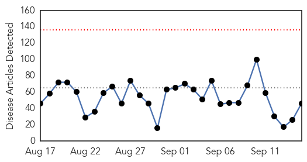

30 Day Trends
Web: 0 alerts, 0 warnings
Twitter: 8 alerts, 0 warnings
Top Articles:
- 0.988
- Napa County Public Health offers free flu shots starting Saturday
- 0.963
- Flu shot a must for moms-to-be
- 0.939
- Salmonella outbreak investigation at Burnside Hospital rules out imported fish
- 0.921
- Chronic Lyme Disease: A silent epidemic the government chooses to ignore -- Health & Wellness -- Sott.net
- 0.900
- Treatment of children with hand-foot-mouth disease being delayed
- 0.866
- Pope, at UN, criticizes greed at expense of world's poor
- 0.860
- Untitled Article
- 0.837
- Outbreak turns consumers away from pork , Business, Phnom Penh Post
- 0.817
- Bluetongue in France; 1.3m doses of vaccine made available
- 0.815
- SkyscraperCity
- 0.792
- Las negociaciones sobre Brexit: ¿ajustando Europa a la opinión pública británica?
- 0.789
- PAHO donates medical supplies to Dominica in aftermath of Tropical Storm Erika - Dominica
- 0.783
- USGS Release: Science Confirms Successful Strategy to Protect Threatened Steelhead from Virus (9
- 0.759
- Bluetongue outbreak in France puts UK farmers on alert
- 0.759
- Everything2.com
- 0.756
- DRC: MSF travels the extra mile to treat sleeping sickness - Democratic Republic of the Congo
- 0.753
- Factors for higher risk of death following hip fracture surgery than hip replacement
- 0.749
- ISIS Has a New Enemy... And Its Not What You May Think
- 0.719
- DRC: MSF travels the extra mile to treat sleeping sickness
- 0.703
- 13 babies test positive for TB
- 0.694
- KOTATV.com Rapid City, Black Hills, So Dak. Gillette Sheridan KOTA Territory News
- 0.689
- Experts question the evidence underpinning e-cigarette recommendations
- 0.680
- Sick? Go easy on those pills
- 0.670
- MSF treats sleeping sickness in remote DRC areas
- 0.657
- Manufactured epidemics: Big Pharma's denial of truth behind Polio puts human species at risk
- 0.655
- Pregnant nurse who refused flu shot fired -
- 0.654
- Wet weather blamed for record human plague cases in Colorado
- 0.649
- Sorry, deze pagina kon niet gevonden worden.
- 0.636
- AMLSN identifies mismanagement of human resources, others as bane of health sector
- 0.631
- 2015 September 15 « nuclear-news
- 0.625
- India’s rabid dog problem is running the country ragged
- 0.612
- From River to Tap: Invisible dangers lurk in untreated water
- 0.592
- Health officials renew fight against cross-border malaria transmissions in Zambia
- 0.591
- Louisville doctor opens women's cancer screening clinic in Haiti
- 0.586
- France to vaccinate livestock following bluetongue outbreak
- 0.575
- City officials lift warning, boil order issued for bacteria found in drinking water
- 0.575
- City officials lift warning, boil order issued for bacteria found in drinking water
- 0.575
- Can going to the dentist give you Alzheimer’s? The lethal brain disease could be transmitted by contaminated instruments
- 0.566
- The Polio Vaccine Continues to Spread Polio and Harm People in Poor Countries
- 0.553
- Understanding Your Electronic Medical Records – US News
- 0.551
- Texas Couple File Yet Another Salmonella Lawsuit Against Cucumber Distributor
- 0.549
- Madagascar plans to immunize 11.3 mln children against poliomyelitis --China Economic Net
- 0.532
- Prescriptions for Health: Ear infections are common in children
- 0.509
- How doctors and nurses are 'walking on by' as patients are dying
- 0.509
- Drive-through flu vaccination clinic returns
- 0.501
- Fight against TB in Papua New Guinea: 'Embarrassment of riches' moment?
Top Tweets:
- 0.820
- MERS: today's Riyadh cases are health workers. Good infection control would protect HCWs; should be in place this late in an outbreak. 2/2
- 0.575
- RT: FLU SCAN: H5N1 outbreaks in Nigeria; Flu vaccine and febrile seizures http://t.co/ASKdyw2BNM
Web/News Articles
Tweets

Article Locations